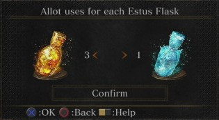
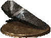
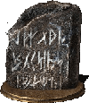
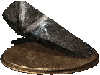
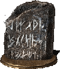

Firelink Shrine
What is Firelink Shrine?
After you've defeated the first boss, you'll come across a location known as Firelink Shrine. This is the hub area of the game. Whenever you need to level up your character, buy items, upgrade equipment, purchase new spells or just chill out with the NPCs (Non-Player Characters) you've met along the way, you should come to Firelink Shrine. Once you've activated the bonfire in Firelink Shrine you can teleport there from any bonfire in the game. You can also teleport to Firelink from any location by using the Homeward Bone item. Be sure to stop by Firelink Shrine to spend all the souls you have saved up to make your character stronger.
Undead Bone Shards
If you find any Undead Bone Shards during your adventure, you can use them to upgrade your bonfire at Firelink Shrine. Upgrading your bonfire will cause your Estus Flask to heal more health points than it did before. To do this, you'll first need to rest at the bonfire in Firelink Shrine. Select "Upgrade Bonfire" from the menu. If you have an Undead Bone Shard in your inventory, you will be given the choice to upgrade your bonfire. If you select "Yes", an Undead Bone Shard will be removed from your inventory and your bonfire will increase in level. You can upgrade the bonfire a maximum of 10 times.
The Firekeeper
The Firekeeper is a blind maiden who tends to the bonfire in Firelink Shrine. If you talk to her, you will be given the option to Level Up. When levelling up, you can spend a predetermined amount of souls to increase a stat point by one. Each level costs an increasing number of souls, but to balance this out enemies you find later on in the game will drop more souls. You don't have to farm, but if you feel like your character isn't strong enough to continue, it might be worth farming some weaker enemies until you can level up to a level you are comfortable with.
The Shrine Handmaiden
The Shrine Handmaiden is a simple item vendor that can be found sitting in a chair near the bonfire in Firelink Shrine. She sells basic consumables, weapons and armor to help you if you ever need them. Throughout the game, you will find special items called Umbral Ash. Bring Umbral Ash to the Shrine Handmaiden and she will add new wares to her shop, so always check and see what she has added when you do this. As a side note, be sure to pick up the White Sign Soapstone from the Handmaiden, as it only costs 500 Souls and is useful if you ever want to be summoned to help other players.
Andre the Blacksmith
A friendly blacksmith from the land of Astora, Andre is here to upgrade your weapons and Estus flasks.
Upgrading and Allotting Estus
Throughout the game you'll find special items called Estus Shards, and if you bring them to Andre he can use them to increase the number of Estus flasks you can carry by one. Andre can also reallocate your Estus. If you talk to him and select "Reallocate Estus," you can choose how much of your Estus is in healing Estus Flasks and how much is in your Ashen Estus flasks.
Reinforcing Weapons
Throughout the game you'll come across special upgrade materials called Titanite Shards. If you bring Titanite Shards to Andre, you can exchange a few plus a small soul price for him to upgrade your weapons so they deal more damage per swing or spell cast. Each weapon can be upgraded 10 times, however it costs more souls and more Titanite to upgrade each time. Also, as the weapon gets stronger it will require stronger Titanite. Weapons can be upgraded form +1 to +3 with standard Titanite Shards, +4 to +6 with Large Titanite Shards, +7 to +9 with Titanite Chunks, and to +10 with a Titanite Slab. Some special weapons will require rarer Twinkling Titanite or Titanite Scales to upgrade.
 




Other NPCs
As you play through the game, you may come across NPCs scattered across the world. If you talk to them, they may choose to come back to Firelink Shrine to help you on your journey. Explore the place frequently and you may find additional vendors that sell rare weapons, materials and spells for souls you've collected.